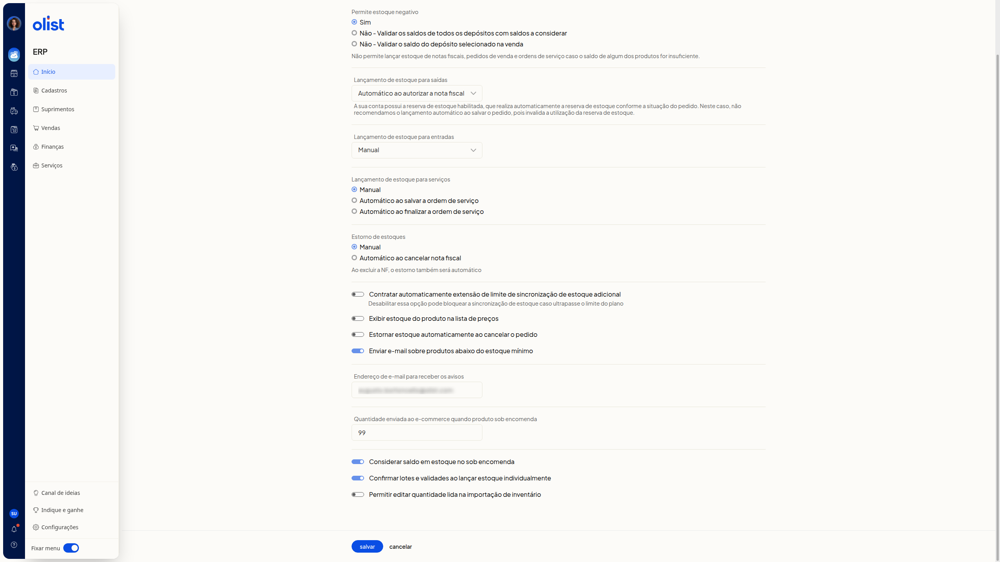

Como configurar o estoque
Descrição
No ERP da Olist, a tela Configurações de estoque reúne os parâmetros de estoque negativo, lançamento de saídas, entradas e serviços, estorno, sincronização, avisos, sob encomenda, lotes e importação de inventário. Você ajusta esses parâmetros para definir como o estoque se comporta em cada um desses pontos.
Acesse Início > Suprimentos > Configurações > Estoque.
Pré-requisitos
- Você precisa estar autenticado no ERP e conseguir abrir Configurações de estoque.
- Se a reserva de estoque estiver habilitada, o lançamento automático ao salvar o pedido não é recomendado, porque invalida o uso da reserva.
Instruções
Como acessar
-
Acesse Início > Suprimentos > Configurações > Estoque. A tela Configurações de estoque abre com as opções atuais.

-
Ajuste as opções abaixo.
-
Clique em Salvar, no fim da tela, para gravar a configuração.
O que cada opção faz
Nenhuma opção é obrigatória.
Estoque negativo
Em Permite estoque negativo, selecione uma das opções:
- Sim
- Não - Validar os saldos de todos os depósitos com saldos a considerar
- Não - Validar o saldo do depósito selecionado na venda
Quando o estoque negativo não é permitido, não é possível lançar estoque de notas fiscais, pedidos de venda e ordens de serviço se o saldo de algum produto for insuficiente.
Lançamento de estoque
Em Lançamento de estoque para saídas, selecione uma das opções:
- Manual
- Automático ao autorizar a nota fiscal
- Automático ao salvar a nota fiscal
- Automático ao salvar o pedido
- Automático ao marcar pedido como enviado
Se a reserva de estoque estiver habilitada, a reserva ocorre conforme a situação do pedido. Automático ao salvar o pedido não é recomendado, porque invalida o uso da reserva.
Em Lançamento de estoque para entradas, selecione uma das opções:
- Manual
- Automático ao autorizar a nota fiscal
- Automático ao salvar a nota fiscal
- Automático ao salvar a ordem de compra
- Automático ao finalizar conferência de compra
Em Lançamento de estoque para serviços, selecione uma das opções:
- Manual
- Automático ao salvar a ordem de serviço
- Automático ao finalizar a ordem de serviço
Estorno
Em Estorno de estoques, selecione Manual ou Automático ao cancelar nota fiscal. A tela informa que, ao excluir a nota fiscal, o estorno também será automático.
Estornar estoque automaticamente ao cancelar o pedido
Sincronização
Desabilitar Contratar automaticamente extensão de limite de sincronização de estoque adicional pode bloquear a sincronização de estoque caso ultrapasse o limite do plano.
Lista de preços
Exibir estoque do produto na lista de preços
Aviso de estoque mínimo
Enviar e-mail sobre produtos abaixo do estoque mínimo envia email sobre produtos abaixo do estoque mínimo. Em Endereço de e-mail para receber os avisos, informe o endereço de email.
Sob encomenda
Em Quantidade enviada ao e-commerce quando produto sob encomenda, informe a quantidade numérica.
Considerar saldo em estoque no sob encomenda
Lotes e importação de inventário
- Confirmar lotes e validades ao lançar estoque individualmente
- Permitir editar quantidade lida na importação de inventário
Ao terminar, clique em Salvar.
Links relacionados
Se precisar de ajuda com estas configurações, fale com o suporte.